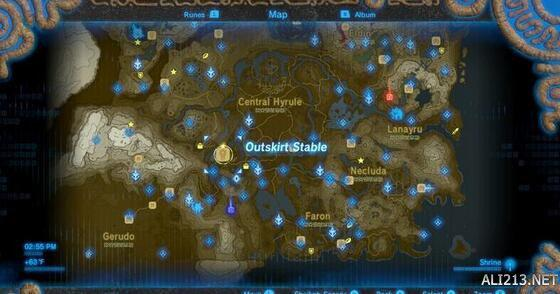
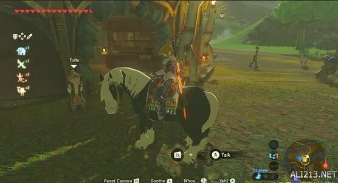
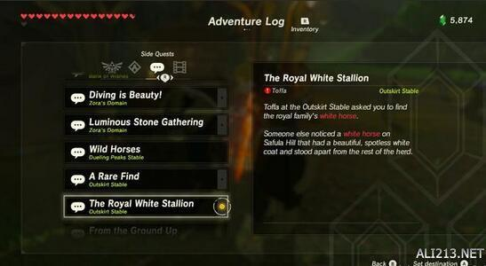
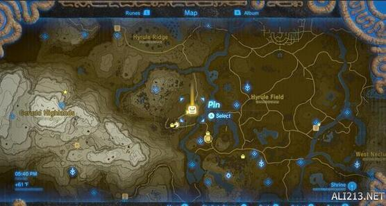
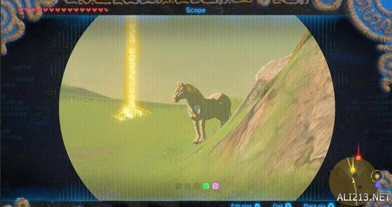

塞尔达传说荒野之息白马在哪里抓？很多玩家不知道具体的位置和获得方法，小编给大家带来了“魔鬼游戏迷”分享的塞尔达传说荒野之息白马位置介绍，一起来看下吧。
白马位置介绍
任务地点
马厩就在link出生不远的地方，如下地图所示，马厩门口有个带着帽子的老人，让你去找白马，



白马的位置
我是在这里找到白马的，注意地图中我打了标记的地方，如果没找到就在附近找找，提前准备做耐力药哦，不然可是抓不到它的。

